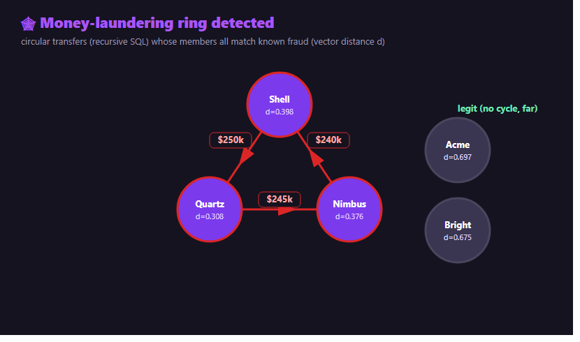
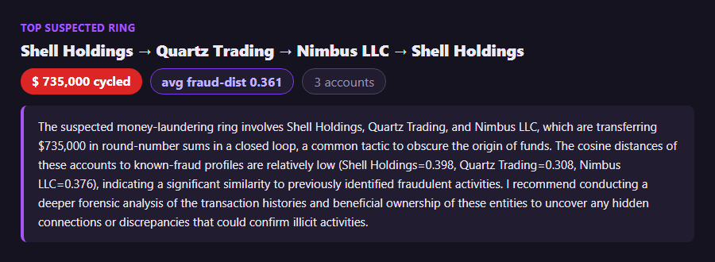

Two signals, one database: who moves money in circles, and who looks like known fraud.
A single suspicious transfer rarely proves much. A ring — money moving A→B→C→A in round‑number hops — is a classic laundering pattern. The trouble is that one signal alone gives false positives: plenty of legitimate businesses pay each other in loops. So I combine two signals in Oracle 26ai: the structure (a cycle in the transfer graph) and the semantics (do these accounts read like known fraud?).

A recursive query walks the transfer graph and keeps any path that returns to where it started. It runs as any user — no special privilege:
WITH paths (start_acct, cur_acct, depth, pth) AS (
SELECT from_acct, to_acct, 1, '-'||from_acct||'-'||to_acct||'-' FROM transfers
UNION ALL
SELECT p.start_acct, t.to_acct, p.depth+1, p.pth||t.to_acct||'-'
FROM paths p JOIN transfers t ON t.from_acct = p.cur_acct
WHERE p.depth < 5
AND (t.to_acct = p.start_acct OR INSTR(p.pth, '-'||t.to_acct||'-') = 0))
SELECT pth FROM paths WHERE cur_acct = start_acct; -- rows that close the loop💡 The elegant alternative: Oracle 26ai's SQL Property Graph expresses the same thing declaratively — MATCH (a)->(b)->(c)->(a). It needs the CREATE PROPERTY GRAPH privilege (GRANT CREATE PROPERTY GRAPH TO <user>):
SELECT * FROM GRAPH_TABLE (money
MATCH (a)-[]->(b)-[]->(c)-[]->(a)
COLUMNS (a.name, b.name, c.name));Each account has a short profile embedded as a vector. How close is it, by meaning, to profiles of known fraud?
SELECT a.name,
MIN(VECTOR_DISTANCE(a.embedding, k.embedding, COSINE)) AS fraud_dist
FROM accounts a, known_fraud k
GROUP BY a.name
ORDER BY fraud_dist; -- ring members ~0.3-0.4, legit businesses ~0.6-0.7The ring members cluster near known fraud; the legitimate businesses sit far away. Cycle + closeness = a ring worth investigating.
Finally, an LLM turns the finding into an analyst's note with a recommended next step — advisory only, nothing is changed:

accounts (with a profile VECTOR) and transfers (the edges).GRAPH_TABLE if you have the privilege).known_fraud profiles with VECTOR_DISTANCE.pip install -r requirements.txt
copy .env.example .env # OPENAI_API_KEY + ORACLE_MCP_CONNECTION
python src/seed.py # accounts, transfers, known-fraud profiles (+embeddings)
python src/detect.py # cycles + vector scoring + LLM summary of the top ring
streamlit run src/dashboard.py # view detected ringsFind circular money flows by hand — a recursive query needs no special privilege; the property‑graph version needs the graph privilege.
1) Detect cycles with a recursive query (no special privilege)
WITH paths (start_acct, cur_acct, depth, pth) AS (
SELECT from_acct, to_acct, 1, '-'||from_acct||'-'||to_acct||'-' FROM transfers
UNION ALL
SELECT p.start_acct, t.to_acct, p.depth+1, p.pth||t.to_acct||'-'
FROM paths p JOIN transfers t ON t.from_acct = p.cur_acct
WHERE p.depth < 5
AND (t.to_acct = p.start_acct OR INSTR(p.pth, '-'||t.to_acct||'-') = 0))
SELECT pth FROM paths WHERE cur_acct = start_acct; -- rows that close the loop2) The same with SQL property graph (if you have the privilege)
SELECT * FROM GRAPH_TABLE (money
MATCH (a)-[]->(b)-[]->(c)-[]->(a)
COLUMNS (a.name, b.name, c.name));3) Rank accounts by similarity to known fraud (vector distance)
SELECT a.name,
MIN(VECTOR_DISTANCE(a.embedding, k.embedding, COSINE)) AS fraud_dist
FROM accounts a, known_fraud k
GROUP BY a.name ORDER BY fraud_dist; -- ring members ~0.3-0.4, legit ~0.6-0.7📦 Full code on GitHub: github.com/khadayatepa/graph-fraud-rings
A learning demo on synthetic data — not a real AML system.